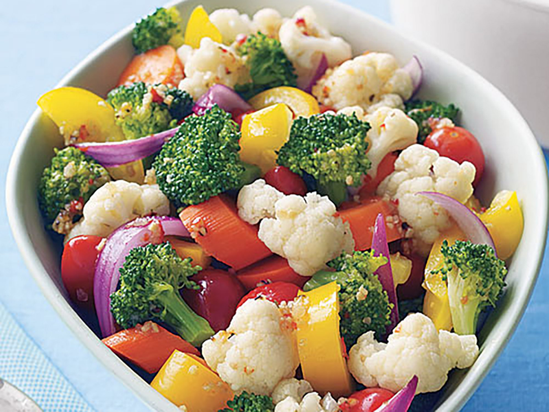

Description:
This is a fine vegetable salad to serve either at a luncheon or at home.
- Prep: 20 mins
- Cook: 15 mins
- Total: 6 hrs
- Servings: 8
- Yield: 8 servings
Ingredients:
- 8 ounces mixed vegetables
- 1 (15 ounce) can red beans, drained and rinsed
- ¼ cup chopped onion
- ¼ cup chopped celery
- ¼ cup chopped green bell pepper
- ½ cup white wine vinegar
- ¾ cup white sugar
- 1 teaspoon prepared mustard
- 1 tablespoon all-purpose flour
Directions:
- In a mixing bowl, combine the mixed vegetables, beans, onion, celery and bell pepper.
- In a small sauce pan, combine vinegar, sugar, mustard and flour. Bring to boil, remove from heat and set aside to cool.
- Pour dressing over vegetables and toss. Refrigerate for at least 6 hours and serve.